![AI4comms]()
Brand imagery · Selection board
AI4comms — imagery selection
73 candidate(s) · 6 theme(s) · 31 stock + 42 generated · raw, pre-treatment · click a card to select; export your picks below
73 candidate(s) · 6 theme(s) · 31 stock + 42 generated · raw, pre-treatment · click a card to select; export your picks below
Small teams of communications professionals genuinely collaborating — the core of what AI4comms strengthens.
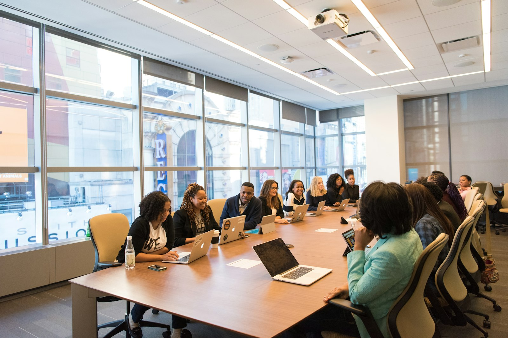
Diverse small group engaged around laptops at a wooden table, natural daylight, muted tones
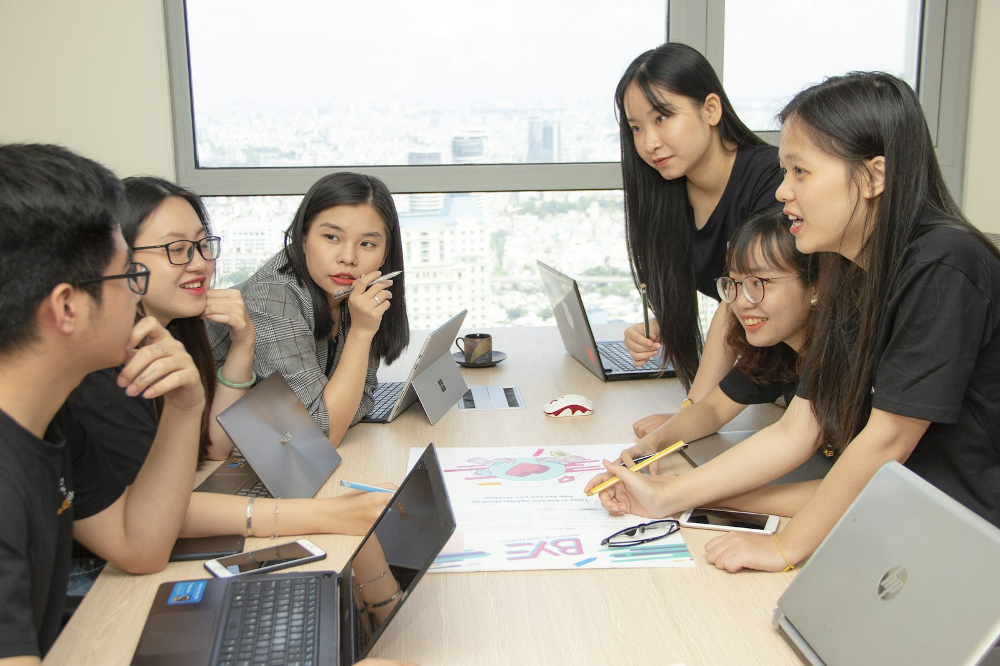
Creative-agency team huddled over laptops mid-discussion, grey-neutral muted palette
Small team discussion in a bright European office, natural window light, neutral tones
Small diverse team collaborating around documents/laptop at a table, neutral office tones
a small team of communications professionals collaborating around a laptop in a bright contemporary Dutch office, sticky notes and a whiteboard softly out of focus behind them, genuine focused and relaxed expressions. medium-wide eye-level shot, soft daylight from a large window, one person gesturing toward the screen, natural candid moment. candid documentary editorial photograph, natural available window light, warm-neutral and lightly desaturated colour grade, authentic unposed real people, contemporary Dutch office setting, shallow-to-medium depth of field, soft muted calm tones, human and unhurried, magazine-quality photojournalism, film-like natural skin tones. soft sage green as the single accent colour, used sparingly. purely visual — NO text, words, letters, numbers, captions, labels or colour codes; no logos, no sheet music or musical notation; a real photographic or illustrated subject, not a 3D render, infographic, diagram or AI-futurism.
a communications professional presenting an idea to two seated colleagues beside a whiteboard in a bright modern Dutch office, sticky notes softly out of focus, genuine engaged expressions. medium-wide eye-level shot, soft window daylight, the presenter mid-gesture, natural candid reportage moment. candid documentary editorial photograph, natural available window light, warm-neutral and lightly desaturated colour grade, authentic unposed real people, contemporary Dutch office setting, shallow-to-medium depth of field, soft muted calm tones, human and unhurried, magazine-quality photojournalism, film-like natural skin tones. pine green as the single accent colour, used sparingly. purely visual — NO text, words, letters, numbers, captions, labels or colour codes; no logos, no sheet music or musical notation; a real photographic or illustrated subject, not a 3D render, infographic, diagram or AI-futurism.
a communications professional presenting an idea to two seated colleagues beside a whiteboard in a bright modern Dutch office, sticky notes softly out of focus, genuine engaged expressions. medium-wide eye-level shot, soft window daylight, the presenter mid-gesture, natural candid reportage moment. candid documentary editorial photograph, natural available window light, warm-neutral and lightly desaturated colour grade, authentic unposed real people, contemporary Dutch office setting, shallow-to-medium depth of field, soft muted calm tones, human and unhurried, magazine-quality photojournalism, film-like natural skin tones. pine green as the single accent colour, used sparingly. purely visual — NO text, words, letters, numbers, captions, labels or colour codes; no logos, no sheet music or musical notation; a real photographic or illustrated subject, not a 3D render, infographic, diagram or AI-futurism.
three colleagues working together at a shared wooden table in an airy contemporary office, laptops and notebooks between them, one laughing softly, relaxed and focused. wide environmental shot showing the room and daylight, shallow-to-medium depth, unposed. candid documentary editorial photograph, natural available window light, warm-neutral and lightly desaturated colour grade, authentic unposed real people, contemporary Dutch office setting, shallow-to-medium depth of field, soft muted calm tones, human and unhurried, magazine-quality photojournalism, film-like natural skin tones. soft sage green as the single accent colour, used sparingly. purely visual — NO text, words, letters, numbers, captions, labels or colour codes; no logos, no sheet music or musical notation; a real photographic or illustrated subject, not a 3D render, infographic, diagram or AI-futurism.
three colleagues working together at a shared wooden table in an airy contemporary office, laptops and notebooks between them, one laughing softly, relaxed and focused. wide environmental shot showing the room and daylight, shallow-to-medium depth, unposed. candid documentary editorial photograph, natural available window light, warm-neutral and lightly desaturated colour grade, authentic unposed real people, contemporary Dutch office setting, shallow-to-medium depth of field, soft muted calm tones, human and unhurried, magazine-quality photojournalism, film-like natural skin tones. soft sage green as the single accent colour, used sparingly. purely visual — NO text, words, letters, numbers, captions, labels or colour codes; no logos, no sheet music or musical notation; a real photographic or illustrated subject, not a 3D render, infographic, diagram or AI-futurism.
a small comms team gathered around a single laptop screen, leaning in together to review something, warm collaborative energy, candid. medium over-the-shoulder shot toward the group, soft side daylight, faces lit, shallow background. candid documentary editorial photograph, natural available window light, warm-neutral and lightly desaturated colour grade, authentic unposed real people, contemporary Dutch office setting, shallow-to-medium depth of field, soft muted calm tones, human and unhurried, magazine-quality photojournalism, film-like natural skin tones. deep forest green as the single accent colour, used sparingly. purely visual — NO text, words, letters, numbers, captions, labels or colour codes; no logos, no sheet music or musical notation; a real photographic or illustrated subject, not a 3D render, infographic, diagram or AI-futurism.
a small comms team gathered around a single laptop screen, leaning in together to review something, warm collaborative energy, candid. medium over-the-shoulder shot toward the group, soft side daylight, faces lit, shallow background. candid documentary editorial photograph, natural available window light, warm-neutral and lightly desaturated colour grade, authentic unposed real people, contemporary Dutch office setting, shallow-to-medium depth of field, soft muted calm tones, human and unhurried, magazine-quality photojournalism, film-like natural skin tones. deep forest green as the single accent colour, used sparingly. purely visual — NO text, words, letters, numbers, captions, labels or colour codes; no logos, no sheet music or musical notation; a real photographic or illustrated subject, not a 3D render, infographic, diagram or AI-futurism.
Guiding a colleague along a path: mentoring, planning, learning together. Mirrors the Routekaart mark.
Two colleagues leaning together over one laptop screen, warm-lit, unposed mentor/peer feel
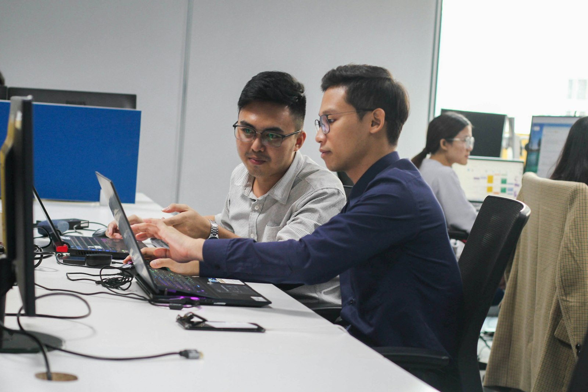
Mentoring dynamic between two men at a desk with a laptop, warm office tones
One person typing while the other watches/guides over the shoulder — side-by-side mentoring
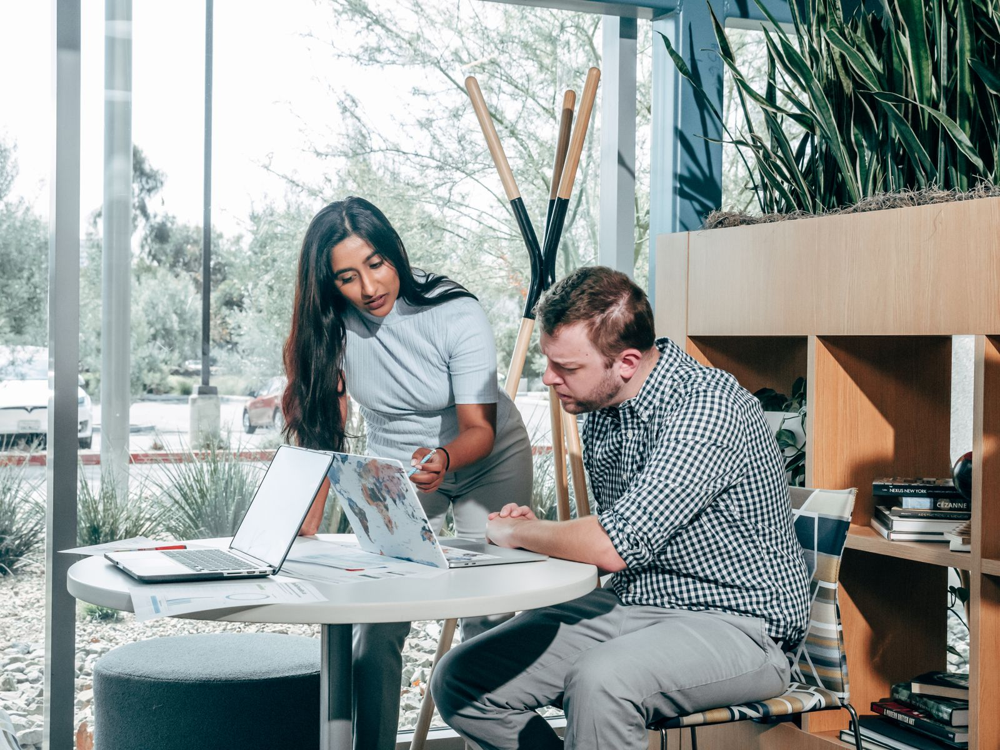
Two colleagues planning together at a laptop, calm unposed exchange, bright natural light
two colleagues sitting side by side at a desk, one calmly guiding the other through something on a laptop, a warm mentor-and-peer moment, both engaged. over-the-shoulder medium shot, warm morning daylight, relaxed posture, soft screen glow, shallow depth. candid documentary editorial photograph, natural available window light, warm-neutral and lightly desaturated colour grade, authentic unposed real people, contemporary Dutch office setting, shallow-to-medium depth of field, soft muted calm tones, human and unhurried, magazine-quality photojournalism, film-like natural skin tones. soft sage green as the single accent colour, used sparingly. purely visual — NO text, words, letters, numbers, captions, labels or colour codes; no logos, no sheet music or musical notation; a real photographic or illustrated subject, not a 3D render, infographic, diagram or AI-futurism.
a mentor and a younger colleague leaning over a printed roadmap on a desk, the mentor pointing at a step on the page while the other follows, warm guiding moment. medium over-the-shoulder shot onto the paper and their hands, warm morning daylight, shallow depth, no readable text on the page. candid documentary editorial photograph, natural available window light, warm-neutral and lightly desaturated colour grade, authentic unposed real people, contemporary Dutch office setting, shallow-to-medium depth of field, soft muted calm tones, human and unhurried, magazine-quality photojournalism, film-like natural skin tones. pine green as the single accent colour, used sparingly. purely visual — NO text, words, letters, numbers, captions, labels or colour codes; no logos, no sheet music or musical notation; a real photographic or illustrated subject, not a 3D render, infographic, diagram or AI-futurism.
a mentor and a younger colleague leaning over a printed roadmap on a desk, the mentor pointing at a step on the page while the other follows, warm guiding moment. medium over-the-shoulder shot onto the paper and their hands, warm morning daylight, shallow depth, no readable text on the page. candid documentary editorial photograph, natural available window light, warm-neutral and lightly desaturated colour grade, authentic unposed real people, contemporary Dutch office setting, shallow-to-medium depth of field, soft muted calm tones, human and unhurried, magazine-quality photojournalism, film-like natural skin tones. pine green as the single accent colour, used sparingly. purely visual — NO text, words, letters, numbers, captions, labels or colour codes; no logos, no sheet music or musical notation; a real photographic or illustrated subject, not a 3D render, infographic, diagram or AI-futurism.
a small group workshop where one person sketches a simple plan on a glass board with a marker while two colleagues watch and discuss, engaged and calm. medium-wide three-quarter shot, soft daylight, the sketcher in focus, natural candid, abstract non-readable marks only. candid documentary editorial photograph, natural available window light, warm-neutral and lightly desaturated colour grade, authentic unposed real people, contemporary Dutch office setting, shallow-to-medium depth of field, soft muted calm tones, human and unhurried, magazine-quality photojournalism, film-like natural skin tones. soft sage green as the single accent colour, used sparingly. purely visual — NO text, words, letters, numbers, captions, labels or colour codes; no logos, no sheet music or musical notation; a real photographic or illustrated subject, not a 3D render, infographic, diagram or AI-futurism.
a small group workshop where one person sketches a simple plan on a glass board with a marker while two colleagues watch and discuss, engaged and calm. medium-wide three-quarter shot, soft daylight, the sketcher in focus, natural candid, abstract non-readable marks only. candid documentary editorial photograph, natural available window light, warm-neutral and lightly desaturated colour grade, authentic unposed real people, contemporary Dutch office setting, shallow-to-medium depth of field, soft muted calm tones, human and unhurried, magazine-quality photojournalism, film-like natural skin tones. soft sage green as the single accent colour, used sparingly. purely visual — NO text, words, letters, numbers, captions, labels or colour codes; no logos, no sheet music or musical notation; a real photographic or illustrated subject, not a 3D render, infographic, diagram or AI-futurism.
two colleagues side by side at a laptop, one calmly explaining while the other takes handwritten notes in a notebook, unhurried peer-learning. medium two-shot from a slight angle, warm window light, shallow depth, both partly visible. candid documentary editorial photograph, natural available window light, warm-neutral and lightly desaturated colour grade, authentic unposed real people, contemporary Dutch office setting, shallow-to-medium depth of field, soft muted calm tones, human and unhurried, magazine-quality photojournalism, film-like natural skin tones. deep forest green as the single accent colour, used sparingly. purely visual — NO text, words, letters, numbers, captions, labels or colour codes; no logos, no sheet music or musical notation; a real photographic or illustrated subject, not a 3D render, infographic, diagram or AI-futurism.
two colleagues side by side at a laptop, one calmly explaining while the other takes handwritten notes in a notebook, unhurried peer-learning. medium two-shot from a slight angle, warm window light, shallow depth, both partly visible. candid documentary editorial photograph, natural available window light, warm-neutral and lightly desaturated colour grade, authentic unposed real people, contemporary Dutch office setting, shallow-to-medium depth of field, soft muted calm tones, human and unhurried, magazine-quality photojournalism, film-like natural skin tones. deep forest green as the single accent colour, used sparingly. purely visual — NO text, words, letters, numbers, captions, labels or colour codes; no logos, no sheet music or musical notation; a real photographic or illustrated subject, not a 3D render, infographic, diagram or AI-futurism.
One professional working thoughtfully with technology — calm, human, no sci-fi tropes.
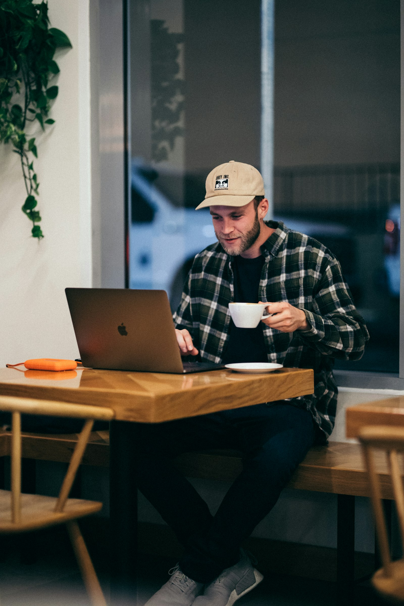
⚠ Actual: man in a cap with coffee at a dark wooden cafe table — moodier/darker than the office brief
⚠ Actual: woman with coffee and laptop against a red-brick loft wall — saturated, not the muted Dutch-office grade
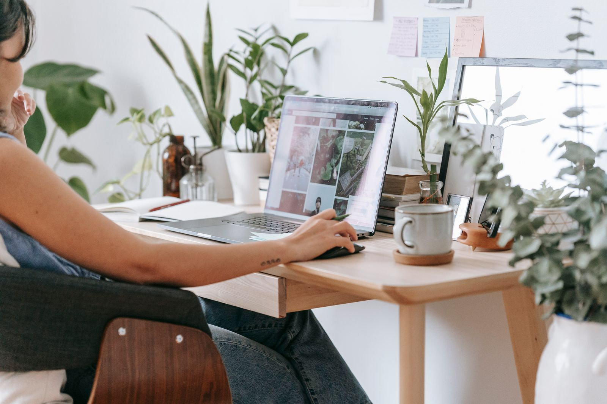
Considered side view of a woman at a laptop with natural light and plants, calm concentration
Overhead candid crop of a person with coffee beside their laptop, desaturated, quiet focus
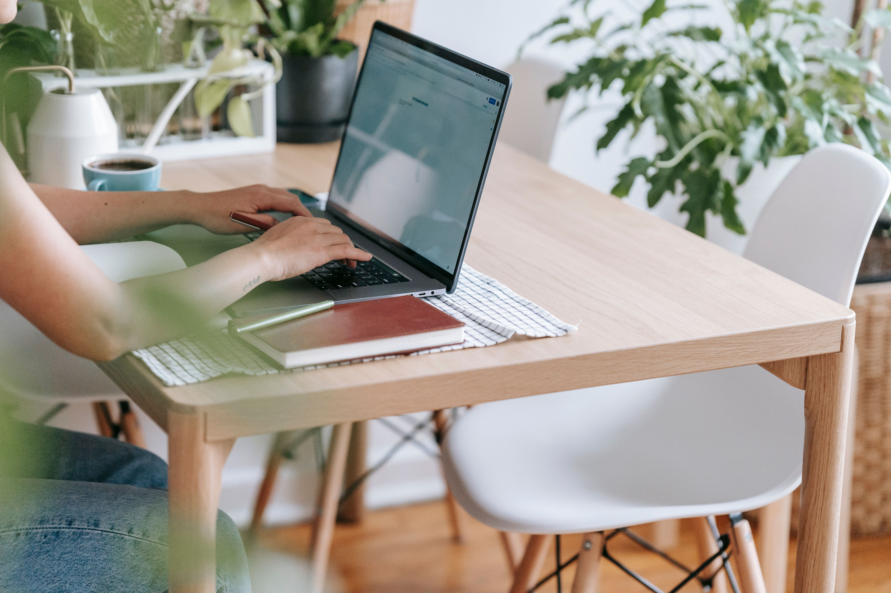
Hands typing on a laptop at a pale wood table surrounded by houseplants, blue-green mug and notebook nearby, screen unreadable, no face — bright airy warm-neutral
a communications professional thoughtfully reviewing work on a laptop, considered and calm, a cup of coffee beside them, unhurried and human. medium-close side-lit portrait, hands and face in focus, shallow depth, no readable screen interface. candid documentary editorial photograph, natural available window light, warm-neutral and lightly desaturated colour grade, authentic unposed real people, contemporary Dutch office setting, shallow-to-medium depth of field, soft muted calm tones, human and unhurried, magazine-quality photojournalism, film-like natural skin tones. pine green as the single accent colour, used sparingly. purely visual — NO text, words, letters, numbers, captions, labels or colour codes; no logos, no sheet music or musical notation; a real photographic or illustrated subject, not a 3D render, infographic, diagram or AI-futurism.
a communications professional wearing a light headset, listening thoughtfully in a warm quiet office, considered and human, hand resting near the chin. medium-close side-lit portrait, face and hands in focus, shallow depth, no readable screens. candid documentary editorial photograph, natural available window light, warm-neutral and lightly desaturated colour grade, authentic unposed real people, contemporary Dutch office setting, shallow-to-medium depth of field, soft muted calm tones, human and unhurried, magazine-quality photojournalism, film-like natural skin tones. pine green as the single accent colour, used sparingly. purely visual — NO text, words, letters, numbers, captions, labels or colour codes; no logos, no sheet music or musical notation; a real photographic or illustrated subject, not a 3D render, infographic, diagram or AI-futurism.
a communications professional wearing a light headset, listening thoughtfully in a warm quiet office, considered and human, hand resting near the chin. medium-close side-lit portrait, face and hands in focus, shallow depth, no readable screens. candid documentary editorial photograph, natural available window light, warm-neutral and lightly desaturated colour grade, authentic unposed real people, contemporary Dutch office setting, shallow-to-medium depth of field, soft muted calm tones, human and unhurried, magazine-quality photojournalism, film-like natural skin tones. pine green as the single accent colour, used sparingly. purely visual — NO text, words, letters, numbers, captions, labels or colour codes; no logos, no sheet music or musical notation; a real photographic or illustrated subject, not a 3D render, infographic, diagram or AI-futurism.
a person writing reflective notes by hand in a notebook beside an open laptop, coffee cup nearby, calm and unhurried. medium-close shot over the hands and notebook, warm directional daylight, shallow depth, subject's face softly present. candid documentary editorial photograph, natural available window light, warm-neutral and lightly desaturated colour grade, authentic unposed real people, contemporary Dutch office setting, shallow-to-medium depth of field, soft muted calm tones, human and unhurried, magazine-quality photojournalism, film-like natural skin tones. soft sage green as the single accent colour, used sparingly. purely visual — NO text, words, letters, numbers, captions, labels or colour codes; no logos, no sheet music or musical notation; a real photographic or illustrated subject, not a 3D render, infographic, diagram or AI-futurism.
a person writing reflective notes by hand in a notebook beside an open laptop, coffee cup nearby, calm and unhurried. medium-close shot over the hands and notebook, warm directional daylight, shallow depth, subject's face softly present. candid documentary editorial photograph, natural available window light, warm-neutral and lightly desaturated colour grade, authentic unposed real people, contemporary Dutch office setting, shallow-to-medium depth of field, soft muted calm tones, human and unhurried, magazine-quality photojournalism, film-like natural skin tones. soft sage green as the single accent colour, used sparingly. purely visual — NO text, words, letters, numbers, captions, labels or colour codes; no logos, no sheet music or musical notation; a real photographic or illustrated subject, not a 3D render, infographic, diagram or AI-futurism.
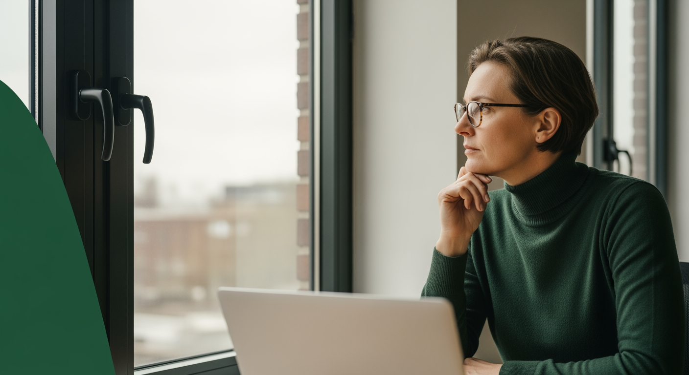
a professional pausing to think while looking out a large office window, laptop open in the foreground, contemplative and warm. medium shot with the window light wrapping the subject, negative space to one side, shallow depth. candid documentary editorial photograph, natural available window light, warm-neutral and lightly desaturated colour grade, authentic unposed real people, contemporary Dutch office setting, shallow-to-medium depth of field, soft muted calm tones, human and unhurried, magazine-quality photojournalism, film-like natural skin tones. deep forest green as the single accent colour, used sparingly. purely visual — NO text, words, letters, numbers, captions, labels or colour codes; no logos, no sheet music or musical notation; a real photographic or illustrated subject, not a 3D render, infographic, diagram or AI-futurism.
a professional pausing to think while looking out a large office window, laptop open in the foreground, contemplative and warm. medium shot with the window light wrapping the subject, negative space to one side, shallow depth. candid documentary editorial photograph, natural available window light, warm-neutral and lightly desaturated colour grade, authentic unposed real people, contemporary Dutch office setting, shallow-to-medium depth of field, soft muted calm tones, human and unhurried, magazine-quality photojournalism, film-like natural skin tones. deep forest green as the single accent colour, used sparingly. purely visual — NO text, words, letters, numbers, captions, labels or colour codes; no logos, no sheet music or musical notation; a real photographic or illustrated subject, not a 3D render, infographic, diagram or AI-futurism.
Genuine two-person conversations: listening, advising, building trust — the Sage+Caregiver archetype in one frame.
⚠ Actual: close-up of hands reviewing sketches/documents across a table — no faces visible (brief said both people fully visible)
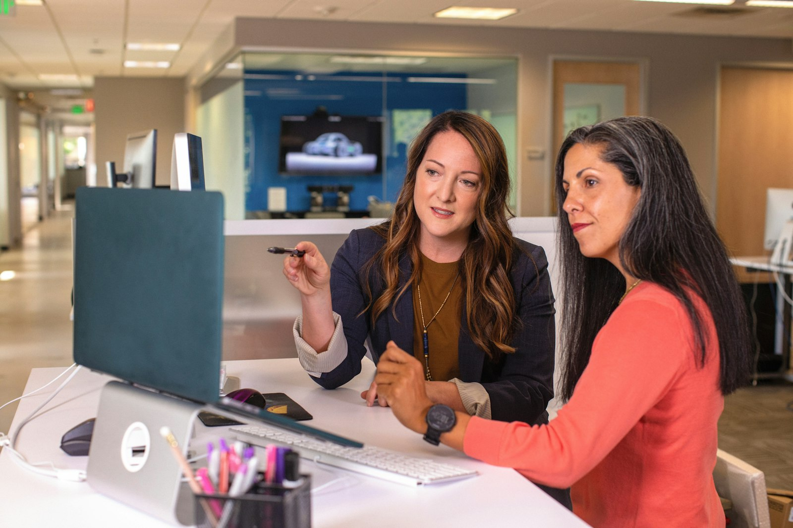
Two colleagues at a small desk, one speaking/gesturing, one listening, warm muted tones
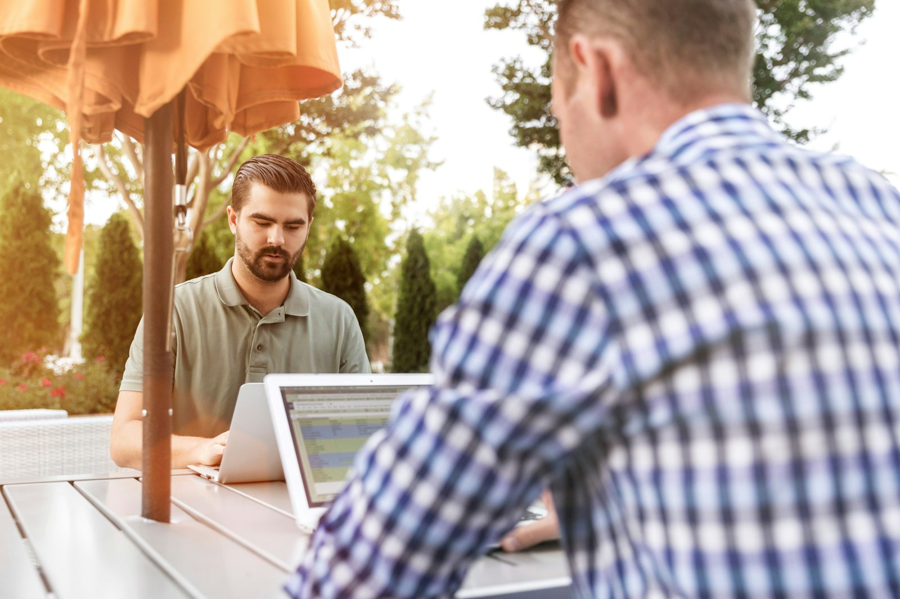
⚠ Actual: two people at an outdoor table under a parasol, one seen from behind — outdoor, not the office brief
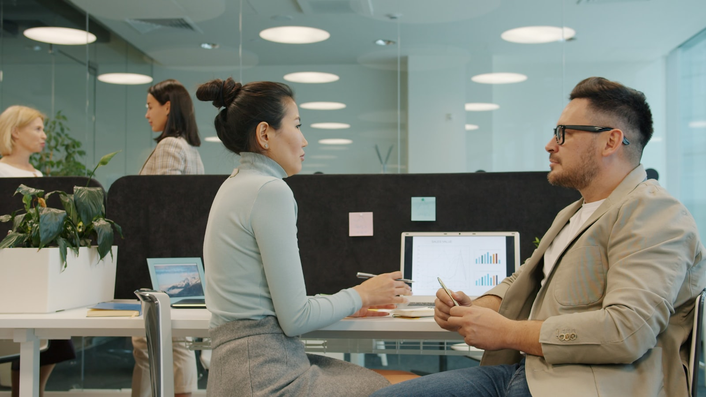
Two coworkers in focused genuine discussion at a desk, both visible, no cheesy grins
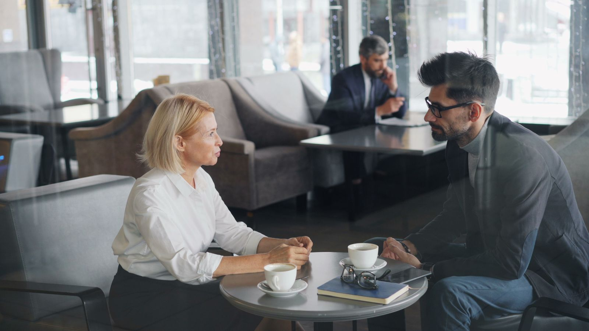
A woman and a bearded man in glasses in genuine conversation across a small round table, both faces visible, coffee cups + notebook on table, bright window light (third person blurred in background)
two colleagues in a real contemporary office having a genuine work conversation across a small meeting table, one listening attentively while the other speaks, a laptop and notebooks on the table between them, warm and candid, both people fully visible. eye-level medium two-shot showing both people and the office environment, softly blurred window and desk behind, natural daylight, documentary reportage NOT a studio portrait, NOT a seamless backdrop. candid documentary editorial photograph, natural available window light, warm-neutral and lightly desaturated colour grade, authentic unposed real people, contemporary Dutch office setting, shallow-to-medium depth of field, soft muted calm tones, human and unhurried, magazine-quality photojournalism, film-like natural skin tones. soft sage green as the single accent colour, used sparingly. purely visual — NO text, words, letters, numbers, captions, labels or colour codes; no logos, no sheet music or musical notation; a real photographic or illustrated subject, not a 3D render, infographic, diagram or AI-futurism.
two colleagues in a relaxed genuine work conversation on a low sofa in an office breakout area, coffee cups on the table, one gesturing while the other listens, warm and candid. eye-level medium two-shot showing both people and the environment, softly blurred window behind, documentary reportage not a studio portrait. candid documentary editorial photograph, natural available window light, warm-neutral and lightly desaturated colour grade, authentic unposed real people, contemporary Dutch office setting, shallow-to-medium depth of field, soft muted calm tones, human and unhurried, magazine-quality photojournalism, film-like natural skin tones. pine green as the single accent colour, used sparingly. purely visual — NO text, words, letters, numbers, captions, labels or colour codes; no logos, no sheet music or musical notation; a real photographic or illustrated subject, not a 3D render, infographic, diagram or AI-futurism.
two colleagues in a relaxed genuine work conversation on a low sofa in an office breakout area, coffee cups on the table, one gesturing while the other listens, warm and candid. eye-level medium two-shot showing both people and the environment, softly blurred window behind, documentary reportage not a studio portrait. candid documentary editorial photograph, natural available window light, warm-neutral and lightly desaturated colour grade, authentic unposed real people, contemporary Dutch office setting, shallow-to-medium depth of field, soft muted calm tones, human and unhurried, magazine-quality photojournalism, film-like natural skin tones. pine green as the single accent colour, used sparingly. purely visual — NO text, words, letters, numbers, captions, labels or colour codes; no logos, no sheet music or musical notation; a real photographic or illustrated subject, not a 3D render, infographic, diagram or AI-futurism.
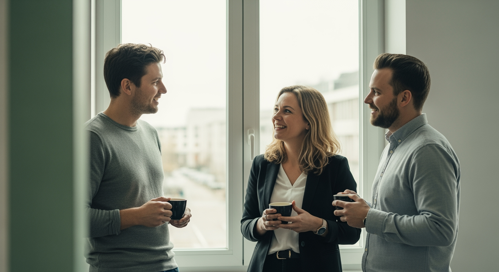
three colleagues in an easy standing conversation near a bright office window with coffee, natural body language and warm expressions, unposed. medium-wide environmental shot, soft daylight, all three visible and engaged, shallow background. candid documentary editorial photograph, natural available window light, warm-neutral and lightly desaturated colour grade, authentic unposed real people, contemporary Dutch office setting, shallow-to-medium depth of field, soft muted calm tones, human and unhurried, magazine-quality photojournalism, film-like natural skin tones. soft sage green as the single accent colour, used sparingly. purely visual — NO text, words, letters, numbers, captions, labels or colour codes; no logos, no sheet music or musical notation; a real photographic or illustrated subject, not a 3D render, infographic, diagram or AI-futurism.
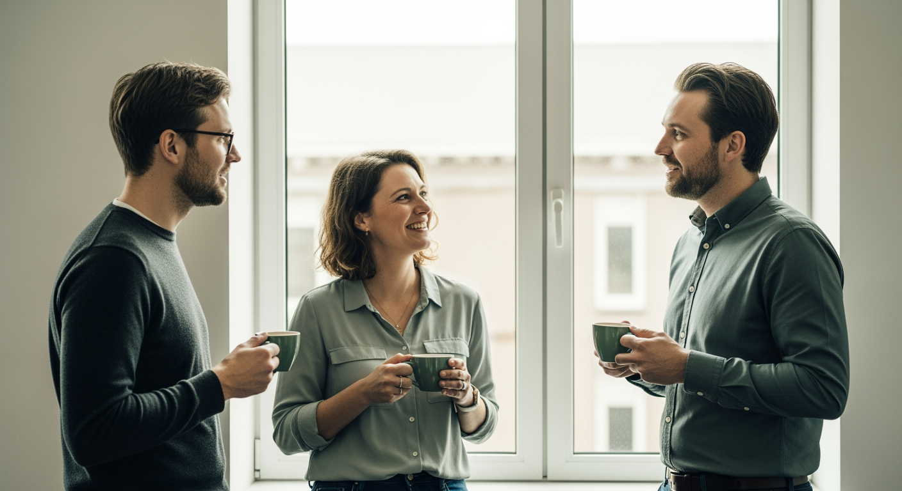
three colleagues in an easy standing conversation near a bright office window with coffee, natural body language and warm expressions, unposed. medium-wide environmental shot, soft daylight, all three visible and engaged, shallow background. candid documentary editorial photograph, natural available window light, warm-neutral and lightly desaturated colour grade, authentic unposed real people, contemporary Dutch office setting, shallow-to-medium depth of field, soft muted calm tones, human and unhurried, magazine-quality photojournalism, film-like natural skin tones. soft sage green as the single accent colour, used sparingly. purely visual — NO text, words, letters, numbers, captions, labels or colour codes; no logos, no sheet music or musical notation; a real photographic or illustrated subject, not a 3D render, infographic, diagram or AI-futurism.
two people mid-conversation across a small meeting table, one leaning in listening attentively, a notebook and laptop between them, a moment of trust. eye-level medium two-shot, warm window light from the side, both fully visible, candid. candid documentary editorial photograph, natural available window light, warm-neutral and lightly desaturated colour grade, authentic unposed real people, contemporary Dutch office setting, shallow-to-medium depth of field, soft muted calm tones, human and unhurried, magazine-quality photojournalism, film-like natural skin tones. deep forest green as the single accent colour, used sparingly. purely visual — NO text, words, letters, numbers, captions, labels or colour codes; no logos, no sheet music or musical notation; a real photographic or illustrated subject, not a 3D render, infographic, diagram or AI-futurism.
two people mid-conversation across a small meeting table, one leaning in listening attentively, a notebook and laptop between them, a moment of trust. eye-level medium two-shot, warm window light from the side, both fully visible, candid. candid documentary editorial photograph, natural available window light, warm-neutral and lightly desaturated colour grade, authentic unposed real people, contemporary Dutch office setting, shallow-to-medium depth of field, soft muted calm tones, human and unhurried, magazine-quality photojournalism, film-like natural skin tones. deep forest green as the single accent colour, used sparingly. purely visual — NO text, words, letters, numbers, captions, labels or colour codes; no logos, no sheet music or musical notation; a real photographic or illustrated subject, not a 3D render, infographic, diagram or AI-futurism.
Still-life warmth: wooden desks, notebooks, morning light. Breathing room for text-heavy surfaces.
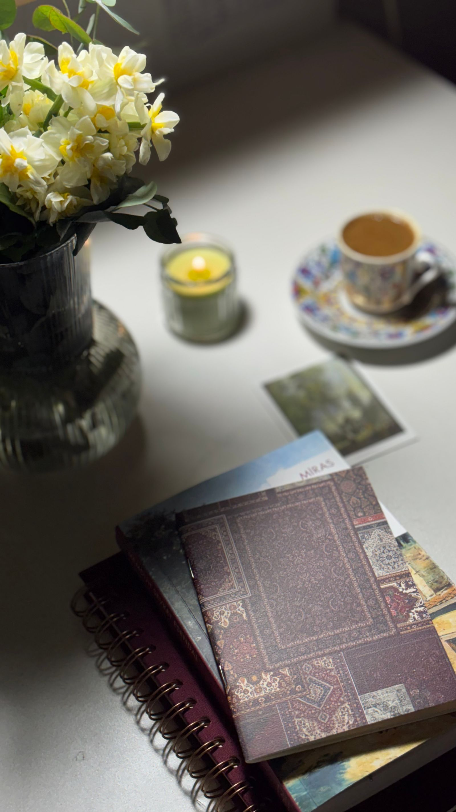
⚠ Actual content: candle-lit still life with flowers, Turkish coffee and patterned notebooks — darker/more decorative than the sourced brief
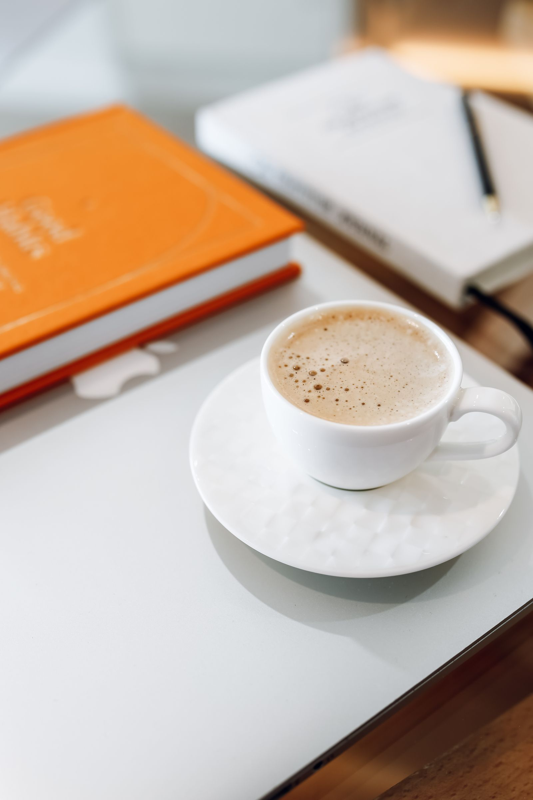
⚠ Actual: white desk with coffee cup, orange book and notebooks — bright but orange-accented, portrait aspect
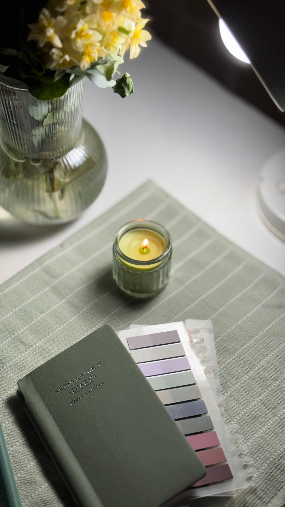
⚠ Actual: green diary, colour swatches and a lit candle on a sage cloth — moody-decorative, not the airy desk brief
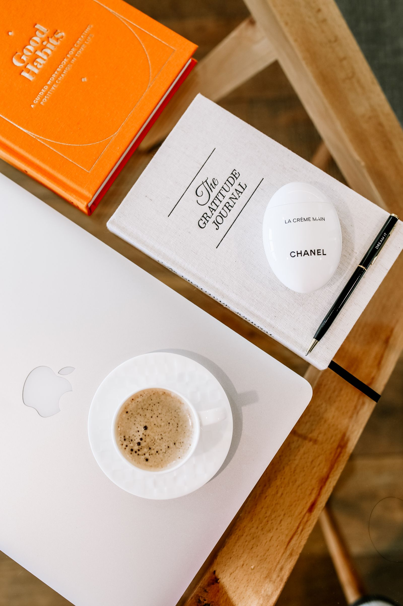
⚠ Actual: flat-lay of coffee cup and orange-covered books on a white desk — clean but orange accent, portrait aspect
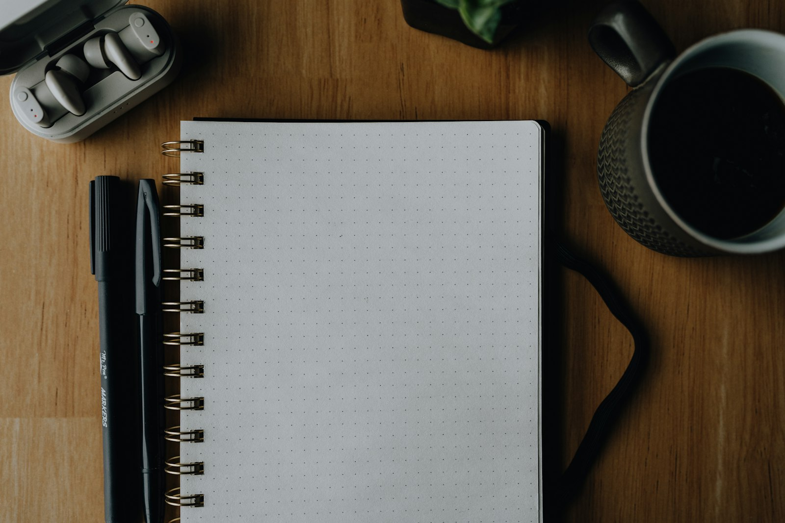
Overhead flat lay on warm honey wood: open dot-grid notebook, pens, dark mug of coffee, earbuds case, plant leaves entering frame — warm-neutral, no people
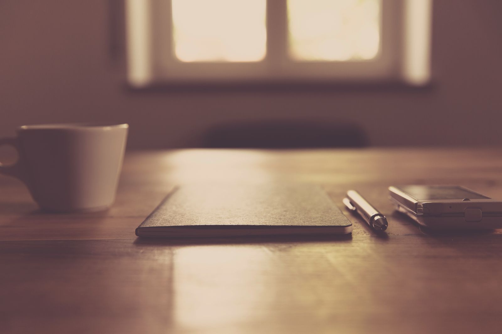
Sepia-warm shot along a wooden desk toward a soft-focus window: closed notebook, silver pen, white cup on saucer, sunlight pooling on the wood — no people
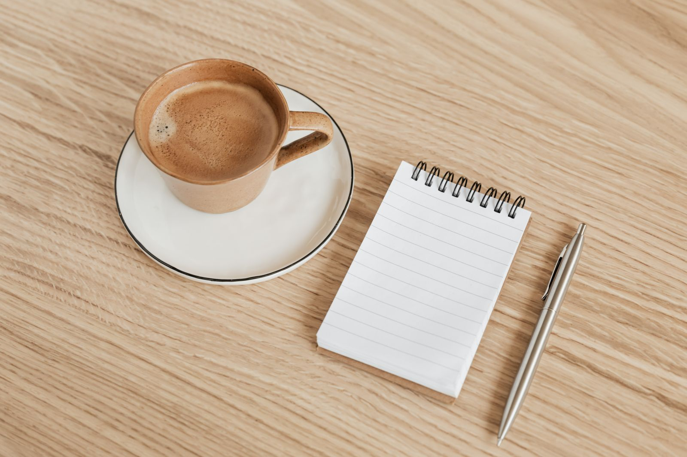
Clean overhead on pale honey wood: espresso cup on white saucer beside a blank spiral notepad and silver pen, generous negative space, muted warm tones
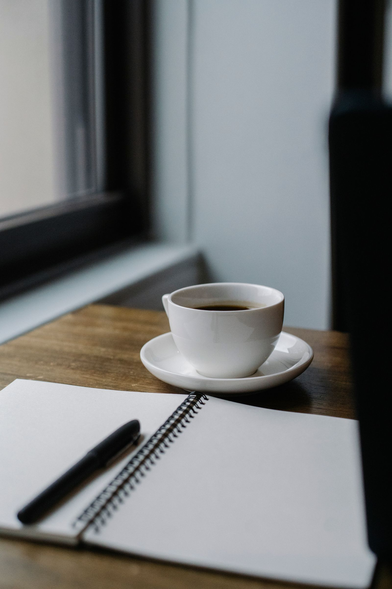
White coffee cup on wooden table beside an open blank notebook and black pen, dark-framed window softly blurred behind, muted warm-neutral (portrait crop)
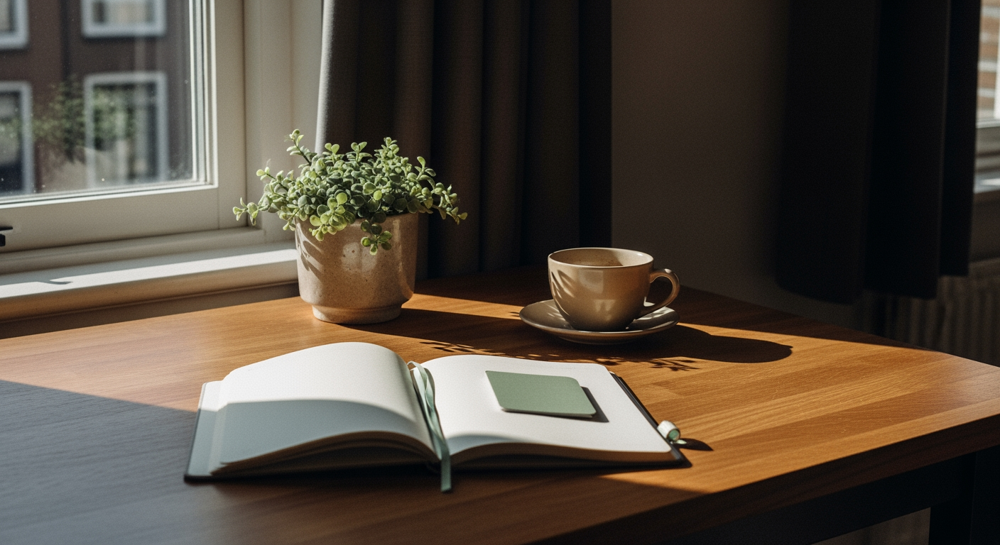
a calm Dutch workspace still life with no people: a wooden desk by a window holding an open notebook, a small plant and a coffee cup, soft morning daylight. three-quarter still-life, airy negative space in the upper area, muted warm tones, gentle shadows. candid documentary editorial photograph, natural available window light, warm-neutral and lightly desaturated colour grade, authentic unposed real people, contemporary Dutch office setting, shallow-to-medium depth of field, soft muted calm tones, human and unhurried, magazine-quality photojournalism, film-like natural skin tones. soft sage green as the single accent colour, used sparingly. purely visual — NO text, words, letters, numbers, captions, labels or colour codes; no logos, no sheet music or musical notation; a real photographic or illustrated subject, not a 3D render, infographic, diagram or AI-futurism.
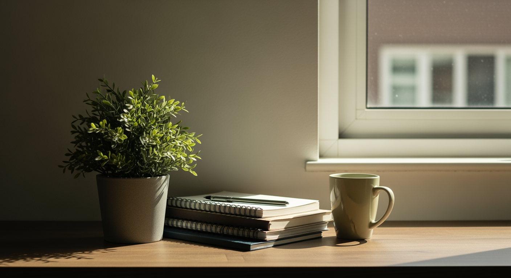
a tidy Dutch office corner in soft morning daylight with a small potted plant, a stack of notebooks and a mug on a wooden surface, muted warm tones, no people. three-quarter still-life with airy negative space in the upper area, gentle shadows. candid documentary still-life photograph, natural available window light, warm-neutral and lightly desaturated colour grade, contemporary Dutch office, shallow-to-medium depth of field, soft muted calm tones, airy and unhurried, magazine-quality, tactile real surfaces, no people. soft sage green as the single accent colour, used sparingly. purely visual — NO text, words, letters, numbers, captions, labels or colour codes; no logos, no sheet music or musical notation; a real photographic or illustrated subject, not a 3D render, infographic, diagram or AI-futurism.
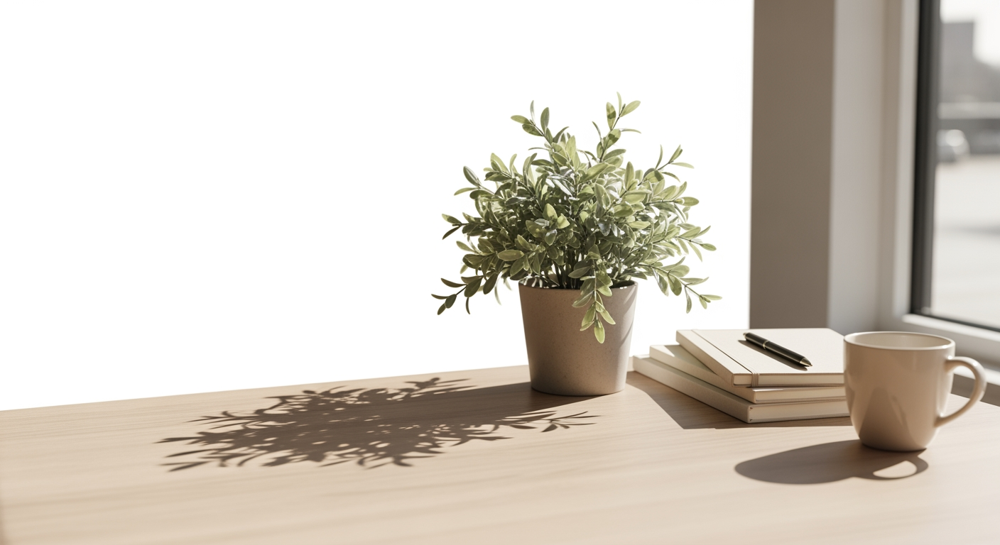
a tidy Dutch office corner in soft morning daylight with a small potted plant, a stack of notebooks and a mug on a wooden surface, muted warm tones, no people. three-quarter still-life with airy negative space in the upper area, gentle shadows. candid documentary still-life photograph, natural available window light, warm-neutral and lightly desaturated colour grade, contemporary Dutch office, shallow-to-medium depth of field, soft muted calm tones, airy and unhurried, magazine-quality, tactile real surfaces, no people. soft sage green as the single accent colour, used sparingly. purely visual — NO text, words, letters, numbers, captions, labels or colour codes; no logos, no sheet music or musical notation; a real photographic or illustrated subject, not a 3D render, infographic, diagram or AI-futurism.
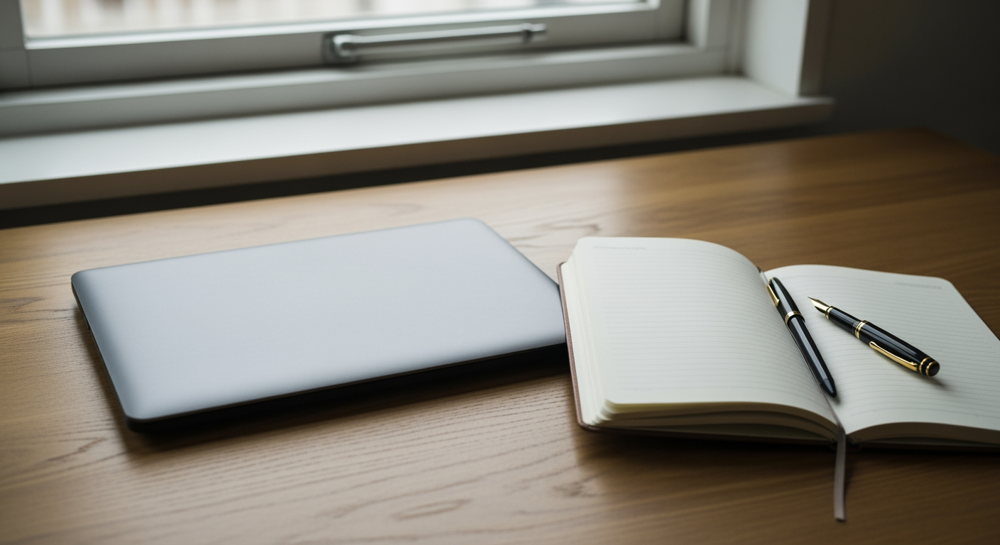
a close still-life of a closed laptop, an open notebook and a fountain pen on a warm wooden desk beside a window, calm and considered, no people. top-down-ish three-quarter still-life, soft daylight, negative space, muted tones. candid documentary still-life photograph, natural available window light, warm-neutral and lightly desaturated colour grade, contemporary Dutch office, shallow-to-medium depth of field, soft muted calm tones, airy and unhurried, magazine-quality, tactile real surfaces, no people. pine green as the single accent colour, used sparingly. purely visual — NO text, words, letters, numbers, captions, labels or colour codes; no logos, no sheet music or musical notation; a real photographic or illustrated subject, not a 3D render, infographic, diagram or AI-futurism.
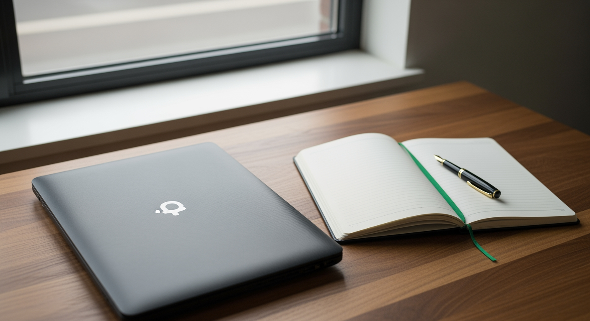
a close still-life of a closed laptop, an open notebook and a fountain pen on a warm wooden desk beside a window, calm and considered, no people. top-down-ish three-quarter still-life, soft daylight, negative space, muted tones. candid documentary still-life photograph, natural available window light, warm-neutral and lightly desaturated colour grade, contemporary Dutch office, shallow-to-medium depth of field, soft muted calm tones, airy and unhurried, magazine-quality, tactile real surfaces, no people. pine green as the single accent colour, used sparingly. purely visual — NO text, words, letters, numbers, captions, labels or colour codes; no logos, no sheet music or musical notation; a real photographic or illustrated subject, not a 3D render, infographic, diagram or AI-futurism.
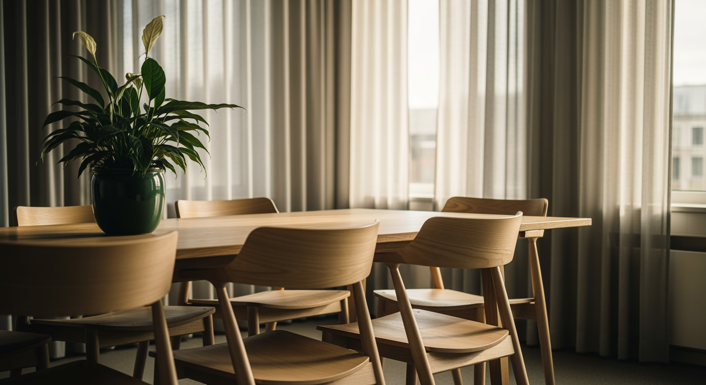
a soft-focus empty meeting room with warm daylight through sheer curtains, a plant and light wooden chairs, quiet and airy, no people. wide environmental still-life, generous negative space, gentle muted forest-green undertone. candid documentary still-life photograph, natural available window light, warm-neutral and lightly desaturated colour grade, contemporary Dutch office, shallow-to-medium depth of field, soft muted calm tones, airy and unhurried, magazine-quality, tactile real surfaces, no people. deep forest green as the single accent colour, used sparingly. purely visual — NO text, words, letters, numbers, captions, labels or colour codes; no logos, no sheet music or musical notation; a real photographic or illustrated subject, not a 3D render, infographic, diagram or AI-futurism.
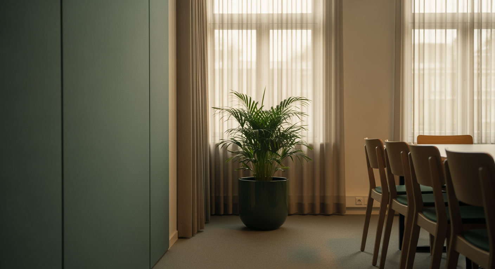
a soft-focus empty meeting room with warm daylight through sheer curtains, a plant and light wooden chairs, quiet and airy, no people. wide environmental still-life, generous negative space, gentle muted forest-green undertone. candid documentary still-life photograph, natural available window light, warm-neutral and lightly desaturated colour grade, contemporary Dutch office, shallow-to-medium depth of field, soft muted calm tones, airy and unhurried, magazine-quality, tactile real surfaces, no people. deep forest green as the single accent colour, used sparingly. purely visual — NO text, words, letters, numbers, captions, labels or colour codes; no logos, no sheet music or musical notation; a real photographic or illustrated subject, not a 3D render, infographic, diagram or AI-futurism.
Hands, paper, pens — tactile detail shots of considered communication work.
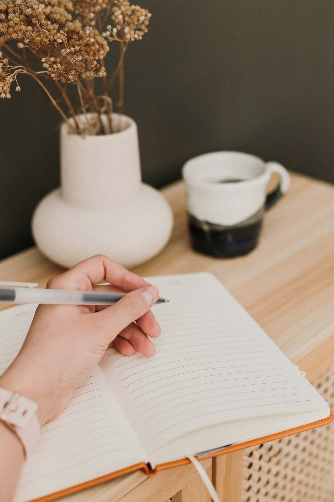
Close-up hands journaling with pen, no face, warm cozy tone, shallow depth
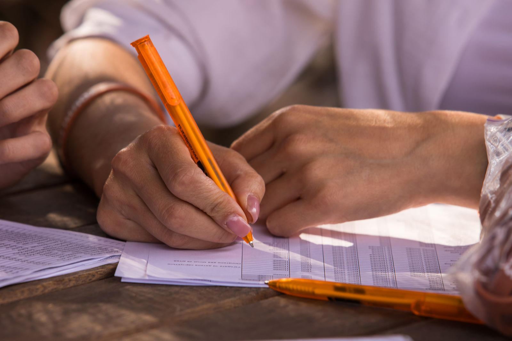
⚠ Actual: hands writing on documents with bright-orange pens at an outdoor wooden table
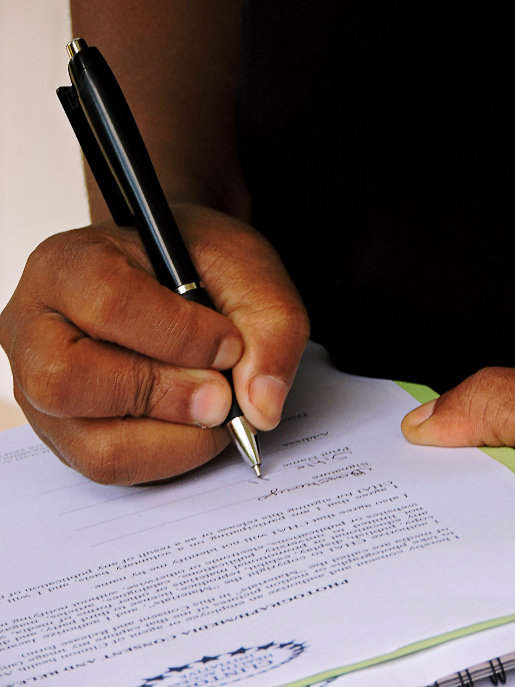
Extreme close-up of hand writing on a formal printed page, no face, textured paper
⚠ Actual: hands with a blue pen over a saturated-blue textbook — off the warm-neutral grade
Extreme close-up of a hand gripping a black pen over a blank notebook page, striped cuff blurred behind, warm skin tones, soft window light — no face
an extreme close-up of hands annotating a printed page with a pen, the craft of considered communication, tactile paper. macro shallow-depth detail, warm directional light, no faces, textured paper. candid documentary editorial photograph, natural available window light, warm-neutral and lightly desaturated colour grade, authentic unposed real people, contemporary Dutch office setting, shallow-to-medium depth of field, soft muted calm tones, human and unhurried, magazine-quality photojournalism, film-like natural skin tones. pine green as the single accent colour, used sparingly. purely visual — NO text, words, letters, numbers, captions, labels or colour codes; no logos, no sheet music or musical notation; a real photographic or illustrated subject, not a 3D render, infographic, diagram or AI-futurism.
an extreme close-up of hands typing gently on a laptop keyboard in warm directional light, the craft of considered work, no faces. macro shallow-depth detail, warm side light, textured focus on the hands. candid documentary still-life photograph, natural available window light, warm-neutral and lightly desaturated colour grade, contemporary Dutch office, shallow-to-medium depth of field, soft muted calm tones, airy and unhurried, magazine-quality, tactile real surfaces, no people. pine green as the single accent colour, used sparingly. purely visual — NO text, words, letters, numbers, captions, labels or colour codes; no logos, no sheet music or musical notation; a real photographic or illustrated subject, not a 3D render, infographic, diagram or AI-futurism.
an extreme close-up of hands typing gently on a laptop keyboard in warm directional light, the craft of considered work, no faces. macro shallow-depth detail, warm side light, textured focus on the hands. candid documentary still-life photograph, natural available window light, warm-neutral and lightly desaturated colour grade, contemporary Dutch office, shallow-to-medium depth of field, soft muted calm tones, airy and unhurried, magazine-quality, tactile real surfaces, no people. pine green as the single accent colour, used sparingly. purely visual — NO text, words, letters, numbers, captions, labels or colour codes; no logos, no sheet music or musical notation; a real photographic or illustrated subject, not a 3D render, infographic, diagram or AI-futurism.
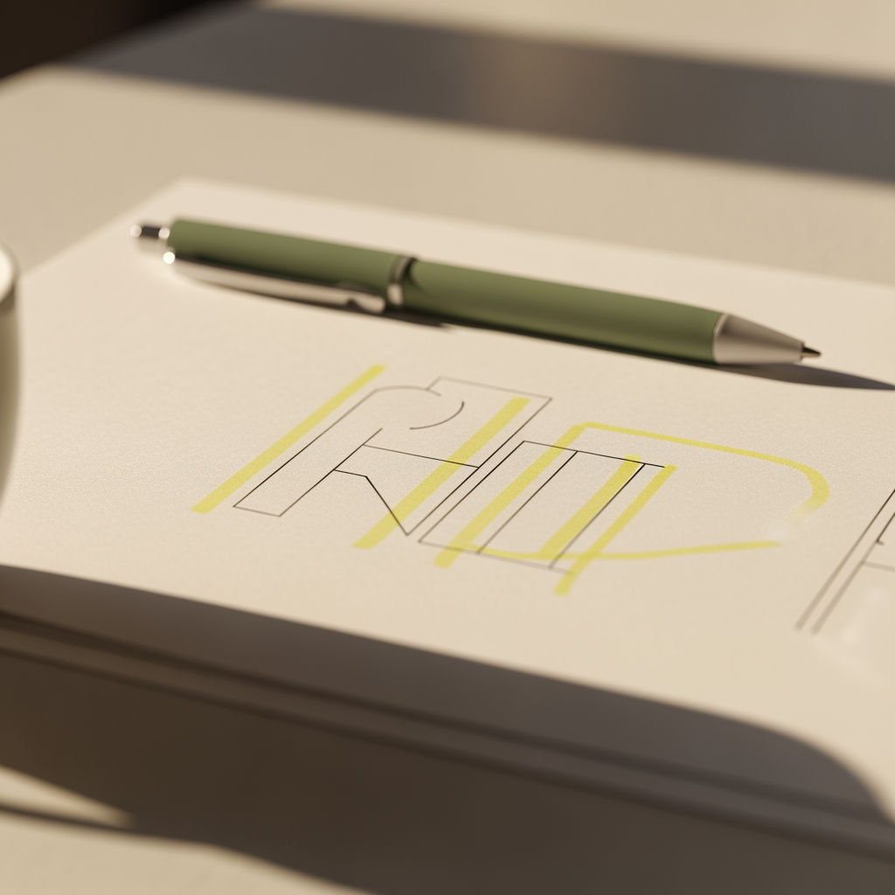
a macro of a printed page marked with a highlighter and a pen resting on it, the edge of a coffee cup just in frame, tactile paper, no faces. macro shallow-depth detail, warm directional light, textured paper, abstract non-readable marks. candid documentary still-life photograph, natural available window light, warm-neutral and lightly desaturated colour grade, contemporary Dutch office, shallow-to-medium depth of field, soft muted calm tones, airy and unhurried, magazine-quality, tactile real surfaces, no people. soft sage green as the single accent colour, used sparingly. purely visual — NO text, words, letters, numbers, captions, labels or colour codes; no logos, no sheet music or musical notation; a real photographic or illustrated subject, not a 3D render, infographic, diagram or AI-futurism.
a macro of a printed page marked with a highlighter and a pen resting on it, the edge of a coffee cup just in frame, tactile paper, no faces. macro shallow-depth detail, warm directional light, textured paper, abstract non-readable marks. candid documentary still-life photograph, natural available window light, warm-neutral and lightly desaturated colour grade, contemporary Dutch office, shallow-to-medium depth of field, soft muted calm tones, airy and unhurried, magazine-quality, tactile real surfaces, no people. soft sage green as the single accent colour, used sparingly. purely visual — NO text, words, letters, numbers, captions, labels or colour codes; no logos, no sheet music or musical notation; a real photographic or illustrated subject, not a 3D render, infographic, diagram or AI-futurism.
a close-up of two colleagues' hands meeting over a shared notebook and pen on a warm desk, a gesture of collaboration, no faces. macro shallow-depth detail, warm window light, tactile textures, muted tones. candid documentary still-life photograph, natural available window light, warm-neutral and lightly desaturated colour grade, contemporary Dutch office, shallow-to-medium depth of field, soft muted calm tones, airy and unhurried, magazine-quality, tactile real surfaces, no people. deep forest green as the single accent colour, used sparingly. purely visual — NO text, words, letters, numbers, captions, labels or colour codes; no logos, no sheet music or musical notation; a real photographic or illustrated subject, not a 3D render, infographic, diagram or AI-futurism.
a close-up of two colleagues' hands meeting over a shared notebook and pen on a warm desk, a gesture of collaboration, no faces. macro shallow-depth detail, warm window light, tactile textures, muted tones. candid documentary still-life photograph, natural available window light, warm-neutral and lightly desaturated colour grade, contemporary Dutch office, shallow-to-medium depth of field, soft muted calm tones, airy and unhurried, magazine-quality, tactile real surfaces, no people. deep forest green as the single accent colour, used sparingly. purely visual — NO text, words, letters, numbers, captions, labels or colour codes; no logos, no sheet music or musical notation; a real photographic or illustrated subject, not a 3D render, infographic, diagram or AI-futurism.